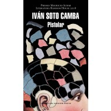

Pistolar (Premio Mauricio Achar / Literatura Random House 2018)
Autor: IVAN SOTO CAMBA
EDITORIAL: LITERATURA RANDOM HOUSE

Autor: IVAN SOTO CAMBA
EDITORIAL: LITERATURA RANDOM HOUSE
Luis Alfredo J. A. vive en un edificio verde, cubierto enteramente por enredadera. De alguna forma, es un edificio invisible o, al menos, demasiado sutil. Sin duda: se trata de un edificio elusivo al servicio postal. Luis Alfredo J. A. escribe cartas, una todos los dias. Es un epistolero profesional. Luis Alfredo J. A. es tambien un esquizofrenico paranoide. Las cartas que escribe Luis Alfredo J. A. estan dirigidas a diversos destinatarios: a su hermana, a funcionarios de Telmex, al candidato Francisco Labastida o Lavastida, a la Virgen de Guadalupe, a sus medicos, al señor Jesucristo o Jesus-Cristo. En sus epistolas, propone inventos genialmente descabellados, planes de salvacion empresarial o politica o espiritual. Son, desde luego, cartas inesperadas, ejemplares de correo no deseado. Spam. (Sin embargo, en una sociedad gobernada por el deseo, quiza sea el spam una forma de resistencia, una estrategia de subversion.) Quiza solo son, en el inconsciente telon de fondo de un esquizofrenico, tentativas de comunicacion consigo mismo. Ivan Soto Camba compone este artefacto narrativo a partir de las cartas -reales- que Luis Alfredo J. A. escribiera desde su enfermedad y desde su departamento en un edificio invisible, o evasivo, como el mismo. Pistolar es un caleidoscopio, una indagacion fragmentaria en el mosaico del yo: basta un ligero movimiento de muñeca y de repente todo cobra sentido.
Avisos de privacidad | Condiciones de uso | Politicas
Los precios publicados en esta tienda están sujetos a cambios sin previo aviso y solo son aplicables para ventas en línea.
Algunos títulos están sujetos a disponibilidad.
Todos los Derechos Reservados
Los precios publicados en esta tienda están sujetos a cambios sin previo aviso y solo son aplicables para ventas en línea.
Algunos títulos están sujetos a disponibilidad.
Todos los Derechos Reservados